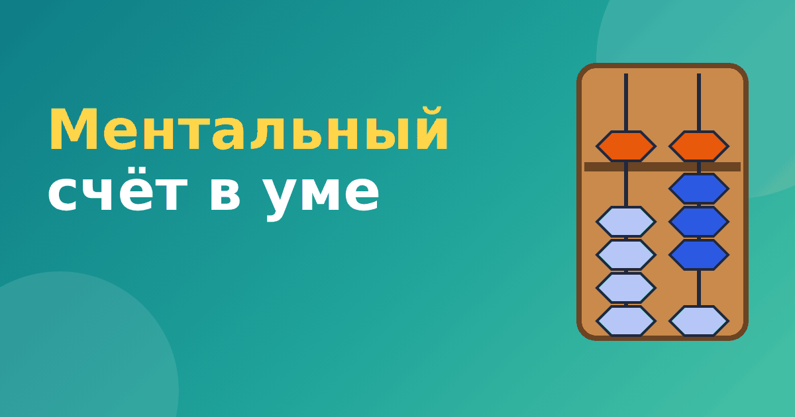

Как работает ментальный счёт: от счётов к картинке в голове

После нескольких месяцев занятий на абакусе наступает самый интересный этап: счёты убирают, и ребёнок начинает считать «на воображаемых». Это и называют ментальным счётом. Со стороны выглядит эффектно: ребёнок смотрит в пустоту, шевелит пальцами и называет ответ. Давайте разберём, что за этим стоит на самом деле.
Что происходит в голове
Ментальный счёт — это счёт по мысленной картинке. Ребёнок представляет абакус с числом, потом представляет, как бусины двигаются при сложении или вычитании, и читает новое число на этой картинке. Никакого волшебства нет: это знакомое всем умение «увидеть в уме», которое тренируется упражнениями.
Пальцы при этом тоже работают. Многие дети двигают пальцами в воздухе так, как двигали бы бусины на настоящих счётах. Это помогает удерживать образ и не терять порядок действий.
Как проходит переход от абакуса к картинке
Хорошие курсы не убирают счёты резко. Обычно идёт такая лесенка.
- Сначала ребёнок считает на абакусе, глядя на него.
- Затем смотрит на абакус, но решает пример, не двигая бусины, и только проверяет ответ.
- Потом абакус показывают на несколько секунд и прячут: нужно запомнить картинку.
- И только потом ребёнок считает на воображаемом абакусе цепочки чисел.
Каждый шаг можно проходить неделями. Спешить не нужно: если образ нечёткий, ребёнок начинает путаться и теряет уверенность.
Упражнение «вспышка»
Самое понятное упражнение — «вспышка». Ребёнку на 2–3 секунды показывают абакус с числом, потом закрывают. Задача — назвать число. Для начала хватает одной цифры, потом двух, трёх. Если ребёнок не справился, показывают ещё раз, но не ругают.
В нашем тренажёре «Ментальная арифметика» есть такой режим: абакус показывается около трёх секунд, потом исчезает, а ребёнок вводит число. Пока ответ не получился, можно показать картинку ещё раз. Модули со «вспышкой» открываются после тех, где ребёнок учится набирать и считать на виртуальном абакусе.
Упражнение «цепочка»
В цепочке числа показываются по одному: 12, затем +7, затем −5, затем +9. Ребёнок держит в голове текущее число и по очереди добавляет и вычитает. Проверим: 12 + 7 = 19, 19 − 5 = 14, 14 + 9 = 23. Ответ 23.
Цепочки лучше начинать с двух-трёх чисел и постепенно удлинять. Если ребёнок сбивается, вернитесь на шаг назад: это нормально. Отдельно про домашние занятия мы писали в статье с чего начать ментальную арифметику дома.
Какие трудности возникают
- Образ не держится. Это бывает у многих. Помогает возврат к абакусу и короткие занятия по 5–7 минут.
- Ребёнок путает разряды. Тренируйте чтение чисел на абакусе, вспомните статью абакус и соробан.
- Быстро устаёт. Мысленный счёт требует концентрации. Лучше заниматься понемногу и делать перерывы.
- Пропадает интерес. Добавьте игру, соревнование с самим собой, награды за серии верных ответов.
Нужен ли ментальный счёт всем
Не обязательно. Для школьной программы вполне достаточно уверенного счёта обычными способами. Ментальный счёт — это дополнительный навык, интересный тем, кому нравится визуальный подход. Если ваш ребёнок предпочитает другие способы, например приёмы устного счёта, можно сравнить их по нашей статье ментальная арифметика или Трахтенберг.
Что считается успехом на этом этапе
Хороший ментальный счёт после абакуса начинается не со скорости, а с уверенной мысленной картинки. Если ребёнок может закрыть глаза и увидеть абакус с числом 47, а потом «подвинуть» бусины для прибавления 6, этап пройден. Скорость придёт позже. Родителям полезно спрашивать не «сколько примеров ты решил», а «что ты видел, когда считал». Ответ показывает, как устроена мысленная картинка у конкретного ребёнка: одни видят целый абакус, другие только нужные стержни, третьи опираются на движение пальцев.
Не огорчайтесь, если картинка у ребёнка нечёткая. Мысленная картинка тренируется постепенно, и у разных детей на это уходит разное время.
Частые вопросы
Можно ли считать в уме, если ребёнок не умеет рисовать картинки в голове?
Можно, но придётся дольше работать с абакусом перед глазами. Некоторым детям образ удаётся хуже, и это не недостаток. Они могут опираться на движения пальцев или на запомненные приёмы.
Сколько времени нужно заниматься, чтобы пошёл ментальный счёт?
Обычно после нескольких месяцев регулярных занятий на самом абакусе. Точных сроков нет, всё зависит от возраста, интереса и частоты занятий.
Итог
Ментальный счёт — следующая ступень после абакуса: картинка в голове заменяет счёты. Он требует времени и регулярности, но объяснить его можно просто: ребёнок учится видеть то, что раньше двигал руками.